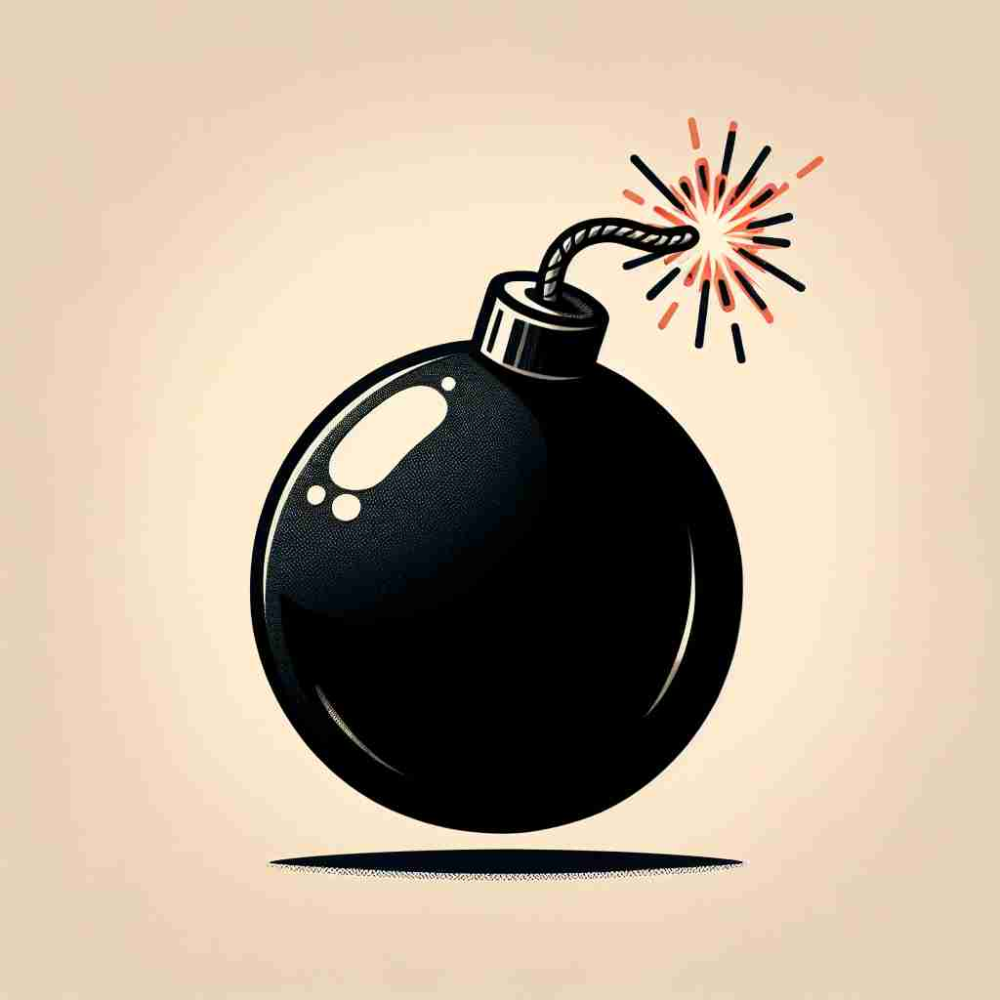
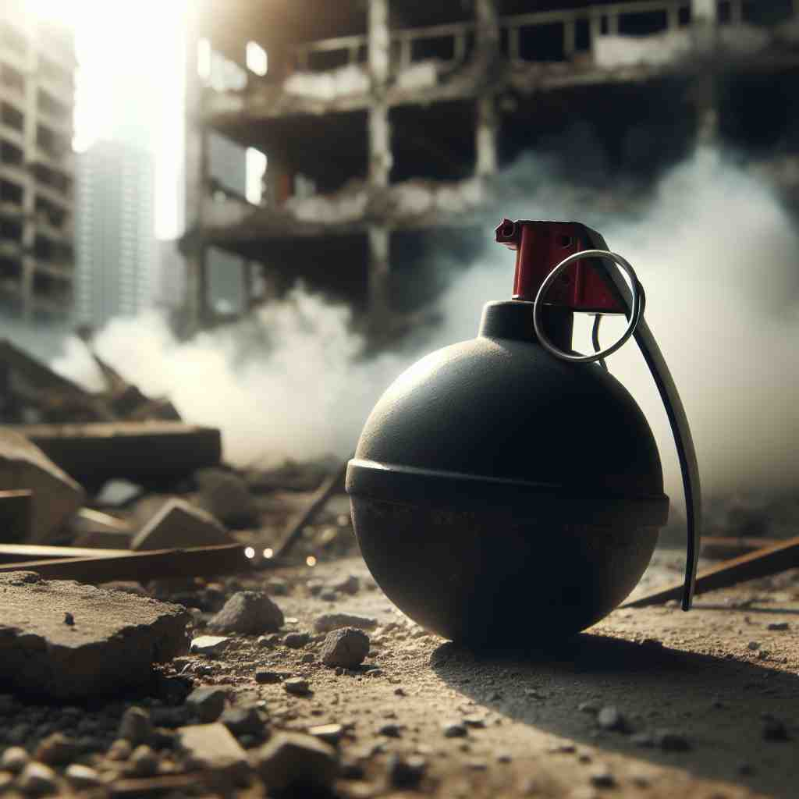

💬 The soldiers need to detonate the bomb safely. 士兵们需要安全引爆炸弹。

💬 The cartoon character plans to set off a bomb for fun. 这个卡通角色计划为了好玩而引爆一颗炸弹。

💬 The soldiers must defuse a bomb in the ruined building. 士兵们必须在废墟中的建筑里拆除一枚炸弹。
💬 The soldiers need to detonate the bomb safely. 士兵们需要安全引爆炸弹。
💬 The cartoon character plans to set off a bomb for fun. 这个卡通角色计划为了好玩而引爆一颗炸弹。
💬 The soldiers must defuse a bomb in the ruined building. 士兵们必须在废墟中的建筑里拆除一枚炸弹。
🧠 想象一个炸弹的特性：爆炸性、突然性、破坏力、不稳定性和高速。这些特性贯穿了'bomb'的各种用法，无论是字面意义还是比喻用法。通过联想炸弹的这些特点，你可以更容易理解和记住'bomb'的多重含义，从实际的爆炸装置到比喻性的失败或成功。
🔈 [bɒm]
🗝️ n. an explosive device designed to explode and cause damage 旨在爆炸并造成破坏的爆炸装置
🎭 在一个紧张的战争电影场景中，一名士兵小心翼翼地靠近一个闪烁着红灯的装置。他知道这个装置是一颗'bomb'，如果不及时拆除，将会造成巨大的破坏。
💬 The bomb exploded in the city center, causing widespread destruction. 炸弹在市中心爆炸，造成了广泛的破坏。
🌳 词根 'bomb' 来源于拉丁语 'bombus'，意为 '嗡嗡声'，后来引申为 '爆炸声'，因此 'bomb' 作为名词意指 '炸弹'。没有明显的前缀或后缀。
💡 记忆 'bomb' 时，可以联想爆炸时发出的巨大声响，原拉丁词 'bombus' 就有这种声音的意思。通过将声音和爆炸联系起来，可以更容易记住 'bomb' 的爆炸意义。
🗝️ v. to attack with or as if with bombs 用炸弹或类似方式进行攻击
🎭 夜幕降临，一个嘈杂的战斗场景中，战斗机在天空中呼啸而过，投下了一排排炸弹。地面上的建筑瞬间被火光吞噬，敌军的阵地被袭击，'bomb'作为动词诠释了猛烈的攻击。
💬 Enemy planes bombed the city during the night. 敌机在夜间轰炸了这座城市。
🤔 使用炸弹的动作
🗝️ n. a sudden and unexpected success 突如其来的成功
🎭 在一场激情洋溢的演唱会上，一位新晋歌手的表演令观众沸腾。出乎所有人的意料，他这场演出成为了演艺圈的轰动，可以称为一颗'sleeper bomb'，突然获得了巨大成功。
💬 Their new movie was a box office bomb. 他们的新电影票房惨败。
🤔 类比炸弹的突然性和巨大影响
🗝️ v. to fail spectacularly 彻底失败
🎭 在一个喜剧电影的试映会上，观众寂然无声，作家的脸上显露出失望。他的电影居然'bombed'了，完全没有达到预期的效果，成为一个显著的失败案例。
💬 The comedian bombed on stage last night. 昨晚那个喜剧演员在台上表现糟糕。
🤔 类比炸弹爆炸的毁灭性效果
🗝️ n. an old or dilapidated car 一辆老旧或破损的汽车
🎭 在一个乡村道路上，一辆破旧不堪的旧车缓慢行驶着。引擎的声音像打雷一样，车体摇摇欲坠。乡村居民都笑称它为一辆老'bomb'，因为它总是快要散架似的。
💬 He drives an old bomb that could break down any minute. 他开着一辆随时可能抛锚的破车。
🤔 类比炸弹的不稳定性和潜在危险
🗝️ v. to move very quickly 快速移动
🎭 在繁忙的城市街道上，一名骑手骑着自行车迅速穿梭在人群中。他以令人惊讶的速度'bomb' through，仿佛在进行一场城市自行车赛。
💬 We bombed down the highway to make it to the concert on time. 我们飞速驶上高速公路，以确保及时赶到音乐会。
🤔 类比炸弹高速飞行的特性